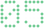
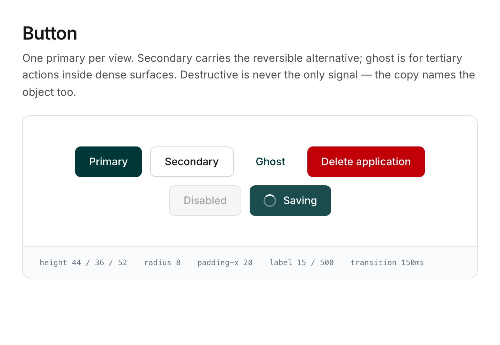

CASE STUDYKeeping a brand clear through five repositionings
Between 2020 and 2026, Yapily changed how it described itself five times. Each time, the website had to explain what customers could buy, how the products fitted together, and how Yapily differed from its competitors.
At a glance
Summary
Situation
The positioning moved through five stages:
- An invisible, API-first infrastructure provider
- Clearer products built around the API
- Open banking infrastructure
- Open finance
- An open banking platform for frictionless finance
Competitor sites looked and sounded alike, so it was hard to tell providers apart. On top of that, the CMS was expensive and publishing was slow.
Task
The CEO’s brief was commercial: launch the new site before the funding announcement. That date set the priority for everything else. I led creative direction and design throughout.
What I did
- Shaped positioning through workshops and competitor analysis.
- Designed the first concepts and wireframes.
- Created dedicated product sections to clarify the offering and the information architecture.
- Directed two agencies, who produced the final visuals. I stayed accountable for direction, the system and build quality.
- Built and governed Mark, the website design system. It shares tokens with the product systems but has its own components, so marketing changes don’t affect production tooling.
- Worked with frontend to build the site on a new CMS. The site moved from WordPress to Contentful and then to Storyblok.
Result
- Launched ahead of the funding announcement.
- More than 50 templates built in under two months, which was possible because the component system already existed.
- Faster publishing, and more independence for Marketing.
- Clearer product architecture.
- A distinct identity, extended with my team into sales and marketing collateral.
Commercial data is confidential.
Each version was right for the stage Yapily was at.

Mark, the website system, alongside the two product systems it shares foundations with.
Reflection
A website can’t fix unclear strategy, but it exposes it. The best work came from using the site structure to force clearer decisions about what Yapily offered.